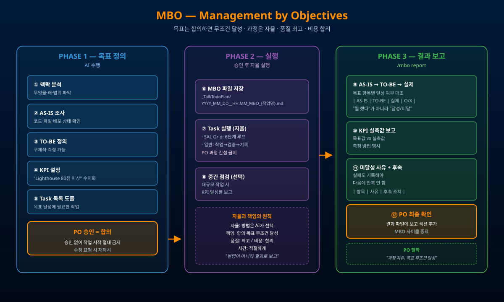

/mbo를 실행하여 ① 상황 분석 ② 목표 구조화 ③ PO 승인(=합의) ④ 자율 실행 ⑤ 달성 보고(=책임) 까지 한 사이클로 묶는다.

/mbo report 실행 가능| 섹션 | 내용 |
|---|---|
| 최상위 목표 | 한 줄로 정의된 작업 목표 |
| 현재 vs 목표 | 항목별 AS-IS / TO-BE 표 |
| KPI | 지표 · 현재값 · 목표값 · 측정 방법 |
| 실행 계획 | Task 번호 · 설명 · 예상 결과 |
| 리스크 | 리스크 · 대응 방안 |
과정은 자유, 결과는 필수
상품성 있는 결과물
서브에이전트 남발·중복 작업 금지
빠르되 품질 희생 X
"좋게" X → "Lighthouse 80+"
승인 없이 실행 절대 금지
PO는 과정에 간섭 X
"뭘 했다" X → "달성/미달"
실패도 사유·후속 명시
| #7 아젠다별 설명·승인 | MBO Phase 1의 승인 절차와 짝 |
| #03·13 SAL Grid | MBO 승인 후 SAL Grid 6단계 루프로 실행 연결 |
| #06 5단계 순차 작업 | MBO Task 분할의 실행 단위 |
| #04 학습·검토·계획 먼저 | MBO Phase 1(목표 정의) 선행 사상과 일치 |